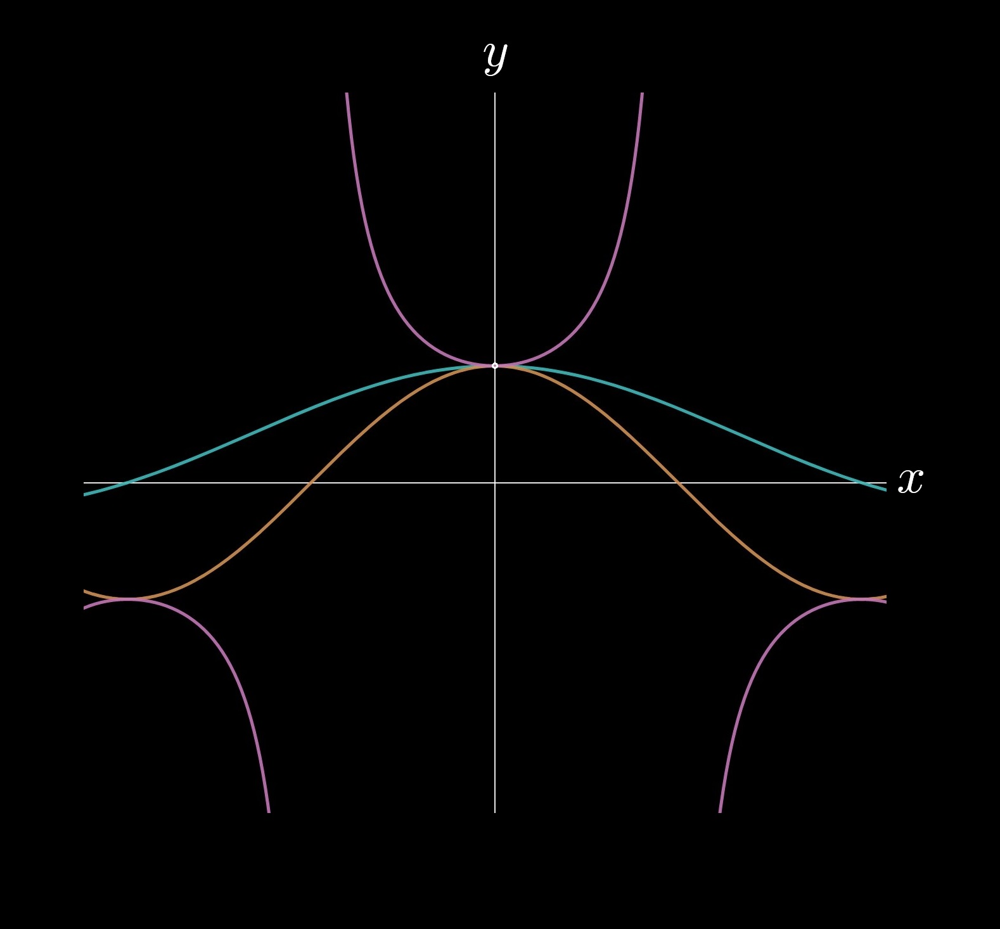

1 — Limits and Continuity

"What is a function approaching?" is the key question in all of calculus on which later
principles—differentiation, integration, and series—are based.
Calculus is known as the "study of infinity," aided by
limits,
which model the behaviors of functions.
In this chapter, you'll learn about limits, their connection to continuity, and key existence theorems.
You'll also be integrating your knowledge of
precalculus—working with rational, polynomial, radical, trigonometric, and piecewise functions—to
apply these new concepts.
SECTIONS
RESOURCES
ttttt
PRACTICE TESTS
The following practice tests feature \(40\) multiple-choice questions (MCQs)
and \(3\) free-response questions (FRQs).
These questions are written to mimic the format of the AP exam,
with roughly \(2\) minutes per MCQ and \(15\) minutes per FRQ.